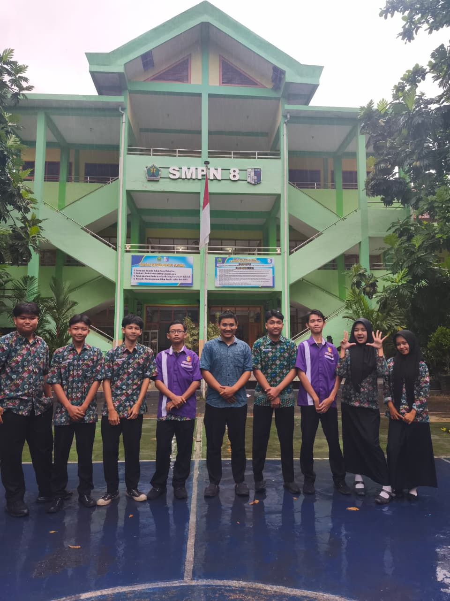
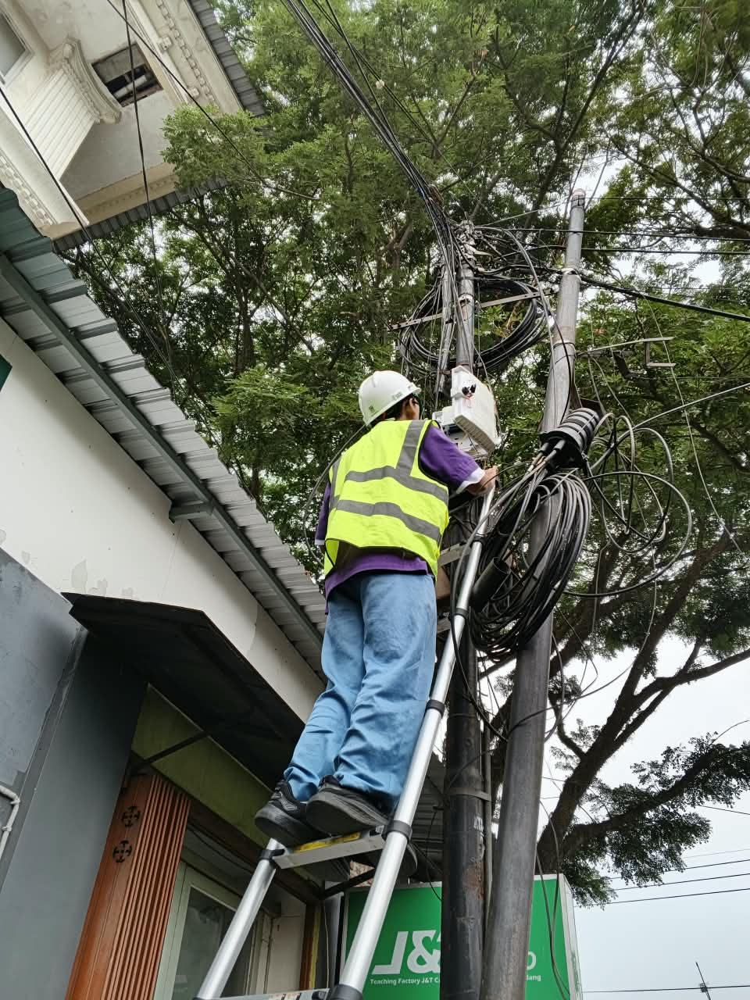

// Proyek
Proyek Terpilih

Kelas IX, Semester 2
Pengembangan Alat Pengukur Kelembapan Tanah Berbasis Arduino
- Merancang dan merakit sistem perangkat keras menggunakan mikrokontroler Arduino dan sensor kelembapan tanah.
- Melakukan kalibrasi dan pengujian alat secara berkala untuk memastikan sistem berjalan stabil dan responsif.
- Menyusun laporan dokumentasi teknis mengenai hasil pengujian akurasi sensor.

Kelas X, Semester 1
Perancangan Maket Simulasi Smart Parking
- Merancang konsep dan tata letak infrastruktur maket simulasi sistem parkir pintar.
- Merakit komponen elektronik pendukung seperti sensor kendaraan dan motor penggerak palang otomatis.
- Melakukan pengujian sistem guna memastikan sensor bekerja secara real-time.

Kelas X, Semester 2
Instalasi dan Penataan Laboratorium Komputer
- Penataan komputer dan alat laboratorium serta perancangan jaringan kabel LAN.
- Pembongkaran dan cleaning komponen komputer.
- Melakukan instalasi OS dan troubleshooting perangkat laboratorium.

Kelas XI, Semester 1
Instalasi Jaringan FTTH
- Perancangan jaringan FTTH dari ODP ke client melalui Google Earth.
- Penarikan kabel DropCore dari tiang ODP ke ONT (client).
- Konfigurasi perangkat ONT dan pengujian akses internet.